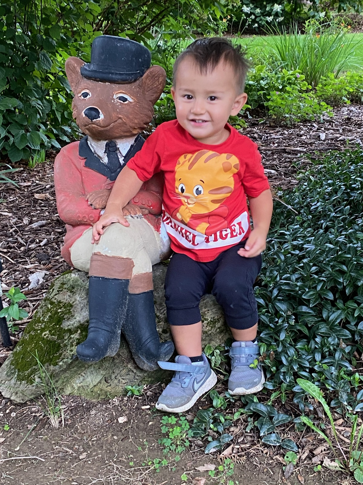
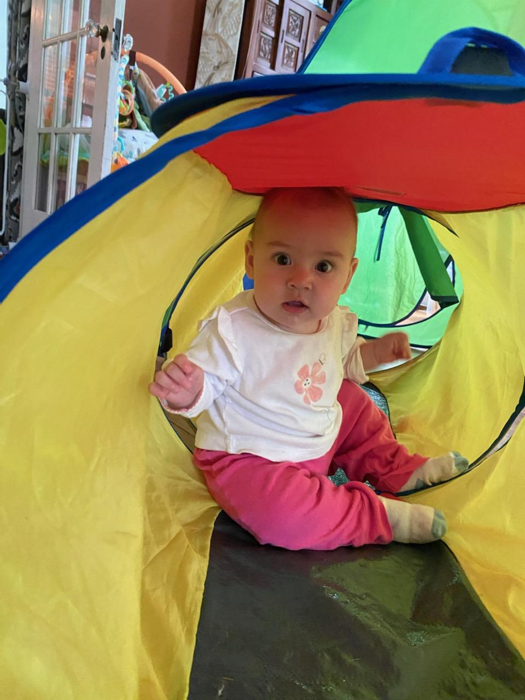

Chris Chen
Communication Designer of Future Media
Home
Professional
Personal
Happy Family
I was born and raised in Yueyang, a small city in Hunan, China.
I love singing, dancing, and playing the piano.
I have a loving family with two young kids --- Jojo and Yoyo.
They are both joy of my life. I enjoy singing and playing with them.
 